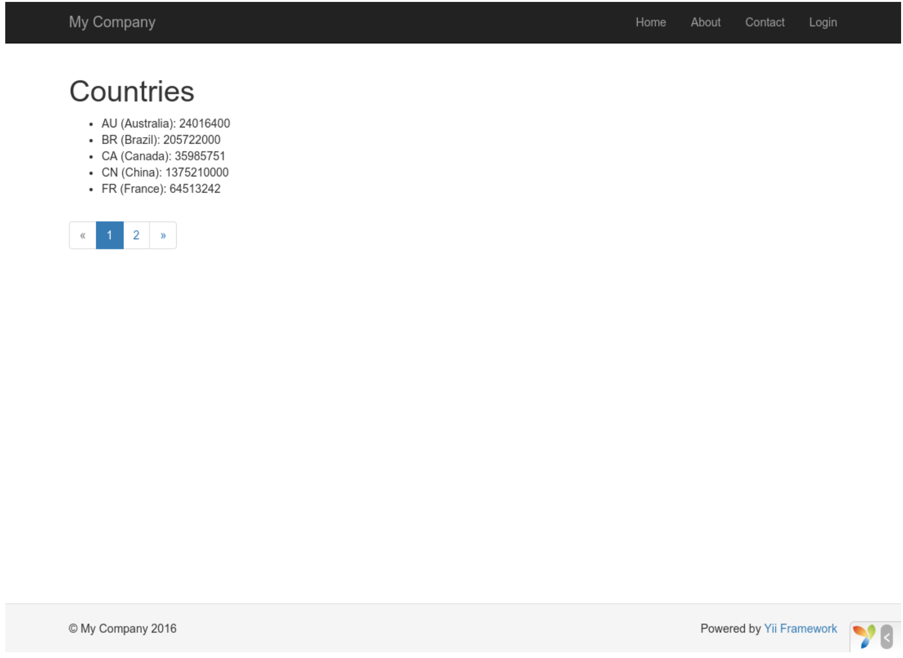

Lavorare con i database¶
Questa sezione descrive come creare una nuova pagina che visualizza i dati di una paese recuperati da una tabella di database denominata country. Per raggiungere questo obiettivo, sarà possibile configurare una connessione di database, creare una classe Active Record, definire un'azione e creare una vista.
Attraverso questo tutorial, imparerai come:
- configurare una connessione DB,
- definire una classe Active Record,
- scrivere una query utilizzando la classe Active Record,
- visualizzare i dati in una vista in modo paginato.
Tieni presente che per terminare questa sezione, dovresti avere conoscenze e esperienze di base nell'utilizzo dei database. In particolare, si dovrebbe sapere come creare un database e come seguire le istruzioni SQL utilizzando uno strumento client del DB.
Preparazione del Database¶
Per iniziare, dobbiamo creare un database denominato yii2basic, da cui recupererai i dati nell'applicazione. E' possibile creare un database SQLite,MySQL,MSSQL,Oracle, in quanto Yii ha un supporto integrato per molte applicazioni di database. Nella seguente descrizione, attueremo una descizione dei database MySQL.
A questo punto, dobbiamo creare una tabella denominata country nel database e inserire alcuni dati di esempio. E' possibile eseguire le seguenti istruzioni SQL per effettuarlo:
CREATE TABLE `country` (
`code` CHAR(2) NOT NULL PRIMARY KEY,
`name` CHAR(52) NOT NULL,
`population` INT(11) NOT NULL DEFAULT '0'
) ENGINE=InnoDB DEFAULT CHARSET=utf8;
INSERT INTO `country` VALUES ('AU','Australia',24016400);
INSERT INTO `country` VALUES ('BR','Brazil',205722000);
INSERT INTO `country` VALUES ('CA','Canada',35985751);
INSERT INTO `country` VALUES ('CN','China',1375210000);
INSERT INTO `country` VALUES ('DE','Germany',81459000);
INSERT INTO `country` VALUES ('FR','France',64513242);
INSERT INTO `country` VALUES ('GB','United Kingdom',65097000);
INSERT INTO `country` VALUES ('IN','India',1285400000);
INSERT INTO `country` VALUES ('RU','Russia',146519759);
INSERT INTO `country` VALUES ('US','United States',322976000);
A questo punto, hai un database denominato yii2basic e all'interno di esso, una tabella denominata country con tre colonne contenenti dieci righe di dati.
Configurazione di una connessione DB¶
Prima di procedere, assicurarsi di aver installato sia l'estensione del PDO di PHP che il driver PDO per il database che si sta utilizzando.
Con quelli installati, aprire il file config/db.php e cambiare i parametri per far si che la connessione con il DB avvenga con successo. Per impostazione predefinita, il file è composto come segue:
<?php
return [
'class' => 'yii\db\Connection',
'dsn' => 'mysql:host=localhost;dbname=yii2basic',
'username' => 'root',
'password' => '',
'charset' => 'utf8',
];
Il file config/db.php è uno strumento di configurazione tipico basato su file. Questo particolare file di configurazione specifica i parametri necessari per creare e inizializzare un'istanza del yii \ db \ Connection in cui è possibile eseguire query SQL nei confronti del database sottostante.
Note
Il file config.db verrà incluso nella configurazione principale dell'applicazione config/web.php, che specifica come inizializzare l'istanza della stessa.
Creazione di un record attivo¶
Per rappresentare e recuperare dati nella tabella country, dobbiamo creare una classe Active Record generata all'interno di un altra classe chiamata Country e salvarla all'interno della directory models/Country.php.
<?php
namespace app\models;
use yii\db\ActiveRecord;
class Country extends ActiveRecord
{
}
La classe Country estende la classe Active Record. Non c'è bisogno di scrivere nessun codice all'interno di esso! Con il codice precedente, Yii indovina il nome della tabella associata al nome della classe.
Note
Se non è possibile eseguire una corrispondenza diretta dal nome della classe al nome della tabella del DB, è possibile utilizzare il metodo tableName() per specificare esplicitamente il nome della tabella associato.
Utilizzando la classe Country, è possibile modificare facilmente i dati nella tabella country, come mostrato in questi frammenti:
use app\models\Country;
// get all rows from the country table and order them by "name"
$countries = Country::find()->orderBy('name')->all();
// get the row whose primary key is "US"
$country = Country::findOne('US');
// displays "United States"
echo $country->name;
// modifies the country name to be "U.S.A." and save it to database
$country->name = 'U.S.A.';
$country->save();
Note
Active Record è un metodo molto potente e utile per accedere e manipolare i dati del database in modo orientato agli oggetti. Potete trovare informazioni più dettagliate nella sezione Active Record spiegata successivamente. In alternativa è possibile interagire con un database utilizzando un metodo di accesso ai dati di livello inferiore denominato Data Accesso Objects.
Creazione di un'azione¶
Per far si che i dati inseriti nel nostro database vengano visualizzati all'utente finale, è necessario creare una nuova azione. Invece di inserire la nuova azione nel site controller, come nelle sezioni precedenti, è più logico creare un nuovo controller specificamente per tutte le azioni relative ai dati del paese. Denominare questo nuovo controller CountryController e creare un'azione index in esso, come mostrato in seguito.
<?php
namespace app\controllers;
use yii\web\Controller;
use yii\data\Pagination;
use app\models\Country;
class CountryController extends Controller{
public function actionIndex(){
$query = Country::find();
$pagination = new Pagination([
'defaultPageSize' => 5,
'totalCount' => $query->count(),
]);
$countries = $query->orderBy('name')
->offset($pagination->offset)
->limit($pagination->limit)
->all();
return $this->render('index', [
'countries' => $countries,
'pagination' => $pagination,
]);
}
}
Salvare il precedente codice nella seguente directory: controller/CountryController.php.
L'azione index chiama Country::find(). Questo metodo Active Record crea una query DB e recupera tutti i dati dalla tabella country nel nostro DB.
Per limitare il numero di paesi restituiti in ogni richiesta, la query viene paginata con l'aiuto di un oggetto yii \ data \ Pagination. L'oggetto Pagination serve per due scopi:
- Imposta le clausole di
offsete dilimitper l'istruzione SQL rappresentato nella query in modo che restituisce solo una singola pagina di dati alla volta (max 5 righe in una pagina), - viene utilizzato nella visualizzazione di un pager costituito da un elenco di pulsanti di pagina, come verrà spiegato nella sottosezione successiva.
Alla fine, l'azione index rende una vista denominata index e passa i dati del paese così come le informazioni di paginazione.
Creazione di una vista¶
Sotto la directory delle views, dobbiamo creare una sotto-directory denominata country. Questa cartella verrà utilizzata per contenere tutte le viste rese dal controllore country. All'interno della directory views/country, creiamo un file denominato index.php contenente quanto segue:
<?php
use yii\helpers\Html;
use yii\widgets\LinkPager;
?>
<h1>Countries</h1>
<ul>
<?php foreach ($countries as $country): ?>
<li>
<?= Html::encode("{$country->name} ({$country->code})") ?>:
<?= $country->population ?>
</li>
<?php endforeach; ?>
</ul>
<?= LinkPager::widget(['pagination' => $pagination]) ?>
La vista presenta due sezioni relative alla visualizzazione dei dati del paese. Nella prima parte, i dati che ci vengono forniti riguardante i paesi vengono attraversati e resi come un elenco HTML non ordinato. Nella seconda parte viene utilizzato un widget yii \ widgets \ LinkPager utlizzando le informazioni di paginazione passate dall'azione. Il widget LinkPager visualizza un elenco di pulsanti per la pagina. Facendo clic su uno di essi verranno aggiornati i dati del paese nella pagina corrispondente.
Per vedere se e come funziona il codice precedente, dobbiamo incollare il seguente URL nel nostro browser
http://hostname/index.php?r=country%2Findex

In un primo momento, vedrai una pagina che mostra 5 paesi. Sotto i paesi, vedrete un pager con 4 pulsanti. Se fai clic sul pulsante 2, la pagina visualizzerà altri cinque paesi che si troveranno nel nostro database. Con il seguente URL se lo copiate e lo incollate nel vostro browser, vedrete a video la seconda pagina dei paesi.
http://hostname/index.php?r=country%2Findex&page=2